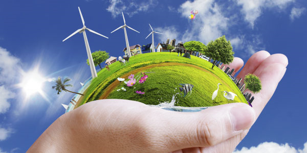
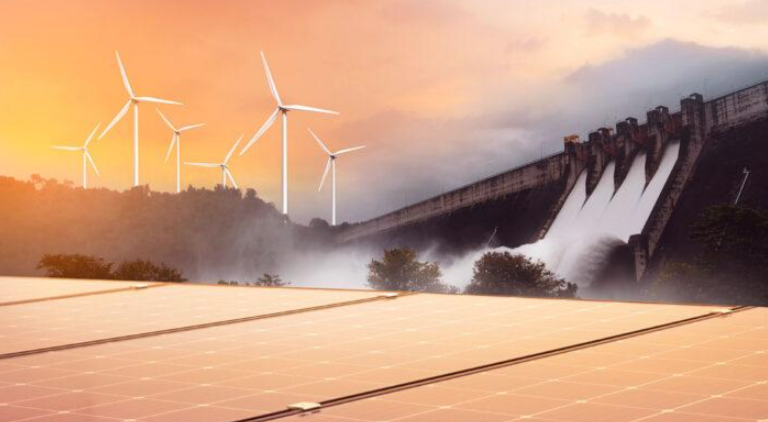
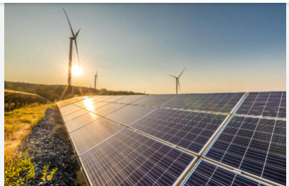
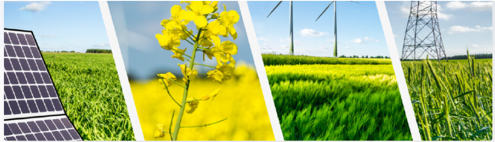
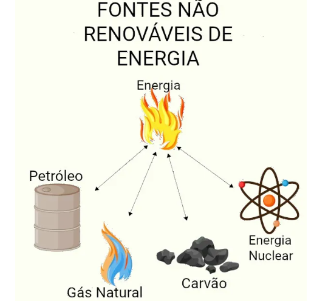

Fonte de energia.

Obtidas a partir de fontes que não se esgotam com o tempo.
Obtidas a partir de fontes que se esgotam com o tempo

Energia eólica é obtida através da conversão da energia cinética do vento em eletricidade. A energia solar aproveita a radiação solar para produzir eletricidade.

A energia hidrelétrica utiliza o fluxo de água de rios ou quedas dágua dos rios para mover as turbinas gerando eletricidade.

Energias fósseis: carvão, petróleo e gás natural e energia nuclear gerada a partir de fissão nuclear.

Energias fósseis: carvão, petróleo e gás natural e energia nuclear gerada a partir de fissão nuclear.